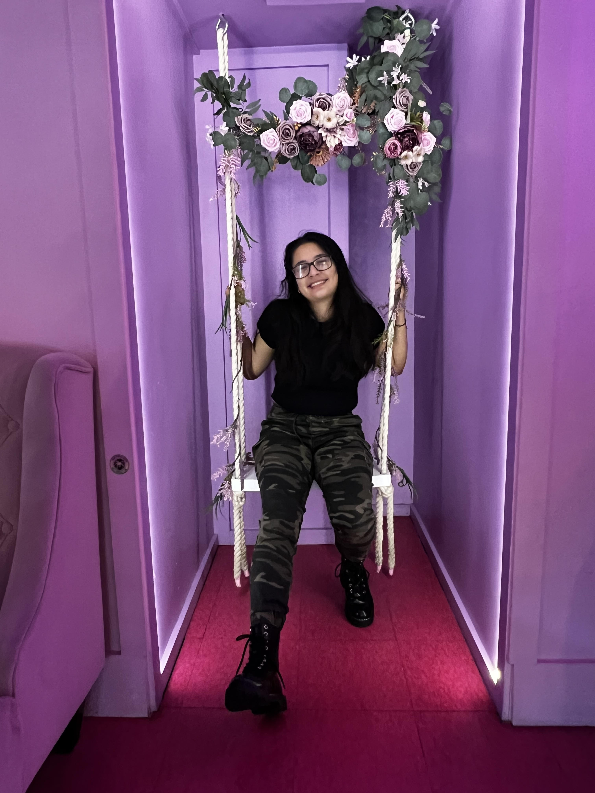

My Name is Katherine, and I'm currently a second year intending in majoring in Informatics or Geography Data Science with a minor in Leadership. A little about me is that I grew up in Seattle in the Magnolia area. My family is from Honduras a country in central america that is very tropical and so pretty and I speak 2. From growing up in a latino household I've always been pushed to work hard for my dreams and push on to new posibilies even through the hard times. I always had a set in my mind to help my community through volunteering and just really seing whats out there in my career with how I implement my own identity through ux design or through reasearching ways that we can broaden the spectrum of people being able to intereact with technology in the way that iss easier. From this dream that I've had it connected my values with the major in Informatics. Hopefully I can gain more experience from the knowledge that I have in my experiences in coding and designing.
